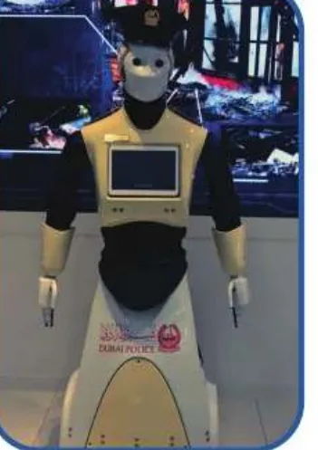

بِطاقَةُ الْمَصادِرِ وَالْمَفاهيمِ: التِّكْنولوجْيا في بِلادي
الدِّراساتُ الِاجْتِماعِيَّةُ · الصَّفُّ الثّالِثُ · ص 31–34
لِلْجَميعِ

مِنْ أَنْواعِ التِّكْنولوجْيا الْهَواتِفُ الذَّكِيَّةُ وَالْإِنْتَرْنِتْ وَالْحَواسيبُ وَالسَّيّاراتُ وَالْأَجْهِزَةُ الطِّبِّيَّةُ، وَفي دُبَيَّ: إِنْتَرْنِتْ مَجّانِيٌّ لِمَدينَةٍ ذَكِيَّةٍ، وَمَحَطّاتُ نَقْلٍ ذَكِيَّةٌ، وَأَوَّلُ شُرْطِيٍّ آلِيٍّ، وَمِصْباحُ دُبَيَّ الَّذي يُوَفِّرُ 90% مِنَ الطّاقَةِ.📖 أَقْرَأُ النَّصَّ
تولي دَوْلَةُ الْإِماراتِ اهْتِمامًا كَبيرًا بِمُواكَبَةِ التَّقَدُّمِ التِّكْنولوجِيِّ بِاعْتِبارِهِ الْقاطِرَةَ الَّتي تَقودُ اقْتِصادَها نَحْوَ الْمُسْتَقْبَلِ. أَنْواعُ التِّكْنولوجْيا: الْهَواتِفُ الذَّكِيَّةُ، وَالْإِنْتَرْنِتْ، وَالْحَواسيبُ، وَالسَّيّاراتُ، وَالْأَجْهِزَةُ الطِّبِّيَّةُ. الْهَواتِفُ الذَّكِيَّةُ: هِيَ الْهَواتِفُ الْمَحْمولَةُ الْحَديثَةُ الَّتي تَسْتَخْدِمُ نِظامَ تَشْغيلٍ مُتَطَوِّرٍ، وَمُعْظَمُها يَتَمَتَّعُ بِخاصِّيَّةِ اللَّمْسِ عَلى الشّاشَةِ. الْإِنْتَرْنِتْ: شَبَكَةُ اتِّصالاتٍ عالَمِيَّةٌ تَسْمَحُ بِتَبادُلِ الْمَعْلوماتِ بِاسْتِخْدامِ الْحَواسيبِ وَغَيْرِها مِنَ الْأَجْهِزَةِ حَوْلَ الْعالَمِ. التِّكْنولوجْيا في إِمارَةِ دُبَيَّ: 1. الْإِنْتَرْنِتْ: طَمَحَتْ إِمارَةُ دُبَيَّ إِلى تَغْطِيَةِ الْمَدينَةِ كامِلَةً بِالْإِنْتَرْنِتْ الْمَجّانِيِّ؛ لِتَتَحَوَّلَ إِلى مَدينَةٍ ذَكِيَّةٍ. 2. وَسائِلُ النَّقْلِ: تَوْفيرُ مَحَطّاتِ نَقْلٍ عامَّةٍ ذاتِ خِدْماتٍ كامِلَةٍ مُكَيَّفَةٍ وَبِها مَقاعِدُ جُلوسٍ، وَتَتَوَفَّرُ فيها شَبَكَةٌ (إِنْتَرْنِتْ) لاسِلْكِيَّةٌ مَجّانِيَّةٌ، وَمِنْطَقَةٌ لِشَحْنِ الْهَواتِفِ. 3. شُرْطَةُ دُبَيَّ: تَمَّ تَشْغيلُ أَوَّلِ شُرْطِيٍّ آلِيٍّ، يَجوبُ الْأَماكِنَ الْعامَّةَ لِمُساعَدَةِ الْجُمْهورِ. 4. مِصْباحُ دُبَيَّ: يُوَفِّرُ مِصْباحُ دُبَيَّ (90%) مِنَ الطّاقَةِ مُقارَنَةً بِالْمَصابيحِ الْعادِيَّةِ.
كِتابي ص 31–34
📘 كَلِماتي
الْهاتِفُ الذَّكِيُّ
📱
الْإِنْتَرْنِتْ
🌐
الذَّكاءُ الِاصْطِناعِيُّ
🤖
مِصْباحُ دُبَيَّ
💡
💡 تَعَلَّمْتُ
📱الْهَواتِفُ الذَّكِيَّةُ بِخاصِّيَّةِ اللَّمْسِ.
🌐الْإِنْتَرْنِتْ شَبَكَةٌ عالَمِيَّةٌ.
🤖أَوَّلُ شُرْطِيٍّ آلِيٍّ في دُبَيَّ.
💡مِصْباحُ دُبَيَّ يُوَفِّرُ 90%.
✅ أُطَبِّقُ
☐أُصَمِّمُ مُلْصَقَ دُبَيَّ الذَّكِيَّةِ.
☐أُكْمِلُ كِتابي ص 33–34.
🏅 ⭐ أَحْسَنْتَ